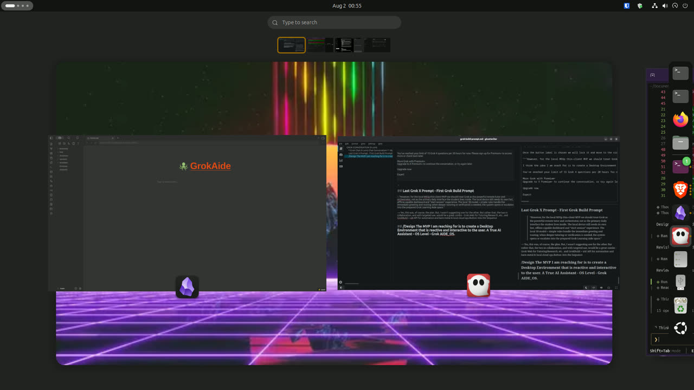

LabNET / SMADP
Multi-node Ubuntu lab: control plane + workers, Tailscale mesh, durable storage, fail-hard health.
Details →Destroy The Kraken · personal lab · not a school product
I build and document private infrastructure, Ubuntu/Linux ops, and AI-assisted workflows so hard problems stop looking impossible. This page is the technical portfolio (HickMedia neon look · DTK branding).
Joshua Hickman — Destroy The Kraken. Career transition into systems & DevOps with a live multi-node home lab, written design discipline, and Valley Tech Support for Okanogan County clients.
Public claims are lab patterns, not multi-tenant hosting of customer data. No student PII. No unfinished school-SKU education distro.
Multi-node Ubuntu lab: control plane + workers, Tailscale mesh, durable storage, fail-hard health.
Details →AI desktop + lab-in-a-box design: VirtualBox classic guest, hybrid AI policy, document-first development.
Details →Core flash/install lessons from appliance lab work — patterns for AIDE, not gaming console product merge.
Details →Public brand + rural IT packages: scoped work, handoff docs, private cloud on gear you own.
destroythekraken.com →LabNET (private — IPs redacted) gateway — lab edge router control plane — Grok director, k3s control, image builds workers ×2 — k3s workers appliance lab — Ubuntu Core–class console experiments NAS — durable tenant storage Tailscale — management mesh only (no public IPs here)

Host control-plane composition (synthwave desk · Ghostty · GrokAide vault). Local screenshot, no management IPs.
Markdown, structure, research→content, file organization, desktop app stacks as a control plane.
Design & planning (PR DAGs, non-goals); testing & debugging (preflight, retrospectives, stop-rules).
Intermediate lab operator — multi-node Ubuntu/k3s; LFCS path; honest evaluation published on Skills.
Calibrating SuperGrok weekly pool → hours/week so evenings/weekends can be off after intentional burn.
Public channels only via destroythekraken.com. Do not publish personal cell, home address, or management IPs on portfolio forks.